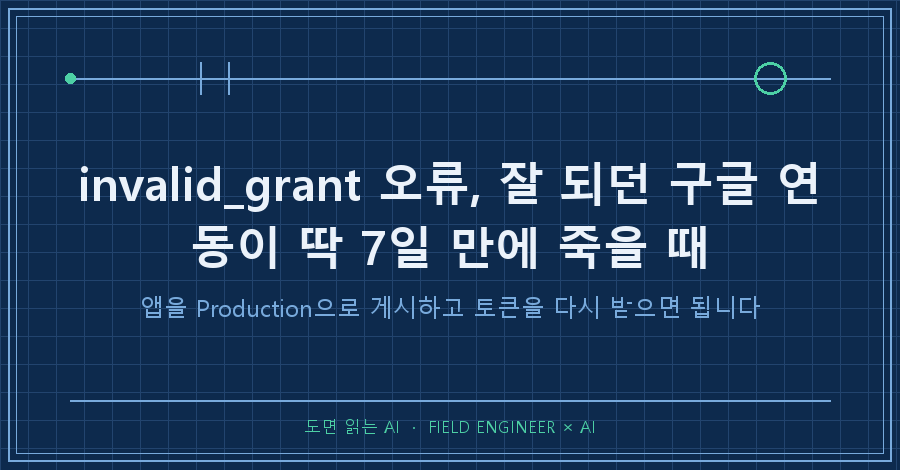
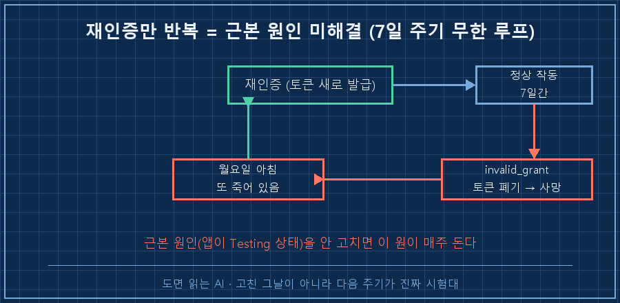
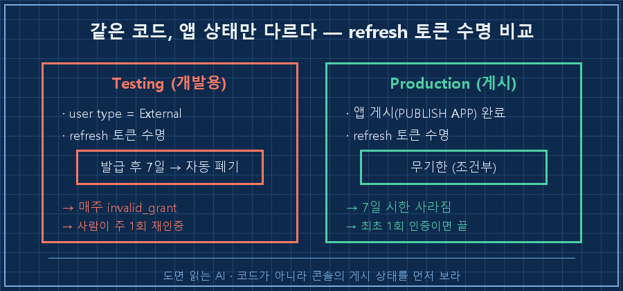
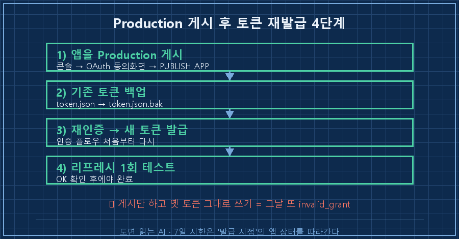

매주 월요일 아침이면 구글 캘린더 자동화가 조용히 죽어 있었어요.
로그를 열면 늘 같은 단어 하나가 찍혀 있고요.
[token_refresh] ERROR: ('invalid_grant: Token has been expired or revoked.')결론부터 말씀드릴게요.
구글 연동이 딱 7일 주기로 invalid_grant를 뱉는다면, 범인은 코드가 아니라 'Testing' 상태로 방치된 앱이에요.
개발용(Testing) 앱이 발급한 refresh 토큰은 7일이 지나면 구글이 강제로 폐기하거든요.
해결은 앱을 Production으로 게시하고, 그다음에 토큰을 새로 받는 순서예요. (2026-07 기준)
제 본업은 수소 설비 제어예요. 판넬 설계하고, PLC 로직 짜고, 현장 나가서 커미셔닝하는 일이죠.
AI랑 파이썬은 그 일 바깥의 자잘한 살림을 무인으로 굴리는 도구로 씁니다.
그중 하나가 일정을 자동으로 정리해주는 캘린더 연동인데, 이 녀석이 7일마다 저를 골탕 먹였습니다.
1. 증상: 재인증하면 살아나는데, 딱 일주일 뒤 또 죽어요
처음엔 일회성 사고인 줄 알았어요.
토큰을 다시 받아오니(재인증) 멀쩡히 돌더라고요. 그래서 넘어갔죠.
그런데 정확히 7일 뒤, 같은 자리에서 같은 에러가 또 났어요.
재인증하면 또 일주일 살고, 또 죽고. 이게 반복이었습니다.
무인 자동화에서 제일 무서운 게 이거예요.
사람이 안 볼 때 조용히 멈춰 있다가, 볼 때만 되살아나는 것.
매주 손으로 토큰을 새로 받는 건 자동화가 아니라 주 1회 알람 노동이잖아요.

2. 원인: 'Testing' 앱의 refresh 토큰은 수명이 7일이에요
한참을 헤매다 원인을 찾았어요. 코드가 아니라 구글 클라우드 콘솔의 앱 상태였습니다.
구글 OAuth 앱에는 '게시 상태'라는 게 있어요. 크게 Testing과 Production 두 가지죠.
그런데 앱이 Testing 상태이고 사용자 유형이 External이면, 구글이 그 앱에서 발급한 refresh 토큰을 7일 뒤에 자동으로 폐기해요.
개발 중인 앱이 오래된 권한을 계속 쥐고 있지 못하게 막는 안전장치인 거죠.
그러니까 제 코드는 처음부터 멀쩡했어요.
매주 월요일 죽은 건 버그가 아니라, 구글이 설계대로 7일짜리 토큰을 회수해 간 결과였습니다.
publishing status : Testing ← 여기가 원인
user type : External
→ refresh token : 발급 후 7일 뒤 자동 폐기 → invalid_grant
3. 해결: Production으로 게시 (근데 함정이 하나 있어요)
진짜 해결은 앱을 Production으로 올리는 거예요.
구글 클라우드 콘솔 → OAuth 동의 화면 → 앱 게시(PUBLISH APP) 버튼.
게시 상태가 Production으로 바뀌면, 그때부터 refresh 토큰의 7일 시한이 사라져요.
본인만 쓰는 개인 자동화라면 게시할 때 '확인되지 않은 앱' 경고가 떠도 그냥 진행하면 됩니다.
캘린더나 메일처럼 민감한 권한을 쓰는 앱을 여러 사람에게 배포하려면 구글 검수가 필요하지만, 내 계정 하나로 돌리는 자동화는 검수 없이도 동작해요.
그런데 여기 함정이 하나 있어요. 저도 여기서 한 번 더 데였습니다.
Production으로 게시해도, Testing 시절에 이미 발급받은 토큰은 자동으로 안 고쳐져요.
7일 시한은 토큰을 '발급받던 시점의 앱 상태'를 따라가거든요.
그래서 게시 직후 옛 토큰으로 그대로 돌리면, 그날 또 invalid_grant를 볼 수 있어요.
정답 순서는 이래요.
1) 콘솔에서 앱을 Production으로 게시
2) 기존 token.json 은 백업 (token.json.bak)
3) 인증을 처음부터 다시 실행해 '새' 토큰 발급
4) 새 토큰으로 리프레시 1회 테스트 → OK 확인
4. 확인: '고쳤다'가 아니라 '다음 주에도 살아있다'까지가 완료
여기서 제 버릇 하나가 또 발동했어요.
재인증해서 "OK" 한 줄 보고 완료라고 적으려다, 멈칫했습니다.
이 자동화, 지난 몇 주 동안 매번 '고친 그날'은 멀쩡했거든요.
문제는 늘 7일 뒤였고요.
그래서 이번엔 그날 성공을 완료로 치지 않고, 다음 자동 실행 주기까지 로그가 계속 초록인지를 확인 항목으로 남겨뒀어요.
고쳤다는 느낌이랑 실제로 안 죽는다는 사실은 다른 물건이니까요.
| 구분 | Testing 방치 | Production 전환 후 |
|---|---|---|
| refresh 토큰 수명 | 7일 | 무기한(조건부) |
| 증상 | 주 1회 invalid_grant | 정상 지속 |
| 사람 손 | 매주 재인증 | 최초 1회 |
| 완료 판정 | (착각) 고친 그날 | 다음 주기 로그 OK |
무인 자동화는 이 마지막 칸이 핵심이에요.
등록하고 "돌겠지" 하는 순간이 사고의 시작이더라고요.
자주 묻는 질문
Q. 그냥 7일마다 재인증하는 스크립트를 짜면 안 되나요?
됩니다. 근데 그건 근본 해결이 아니라 문제를 매주 덮는 거예요. 재인증엔 대개 브라우저 승인이 한 번 끼어서 완전 무인이 안 되고요. Production 전환이 30분이면 끝나는 진짜 해결이라, 저는 우회로를 파느니 상태를 바꾸는 쪽을 권해요.
Q. Production으로 바꿨는데 그날 바로 또 invalid_grant가 떴어요.
십중팔구 옛 토큰을 그대로 쓰고 있어서예요. 게시는 '앞으로 발급될 토큰'에만 적용되거든요. 기존 token 파일을 백업하고, 인증을 처음부터 다시 돌려 새 토큰을 받으면 풀립니다.
정리하면요
구글 연동이 딱 7일마다 죽는다면, 코드를 뜯기 전에 클라우드 콘솔의 앱 게시 상태부터 보세요.
Testing이면 그게 원인이고, Production 게시 + 토큰 재발급이면 대개 끝나요.
그리고 고친 그날이 아니라 다음 실행 주기까지 확인해야 진짜 완료입니다.
다음 글에서는 이렇게 되살린 자동화가 '고쳤다고 믿었는데 대시보드에선 계속 빨간불'이던, 확인 지표가 따로 놀던 이야기를 풀어볼게요.
무인으로 굴리다 이렇게 데인 기록들은 makefield.ai 에 하나씩 쌓는 중입니다.
---
태그: #invalid_grant #구글OAuth #refresh토큰 #구글API자동화 #OAuth토큰만료 #구글캘린더자동화 #파이썬자동화 #토큰재발급 #GCP콘솔 #OAuth동의화면 #Production전환 #무인자동화 #업무자동화 #현장엔지니어 #도면읽는AI